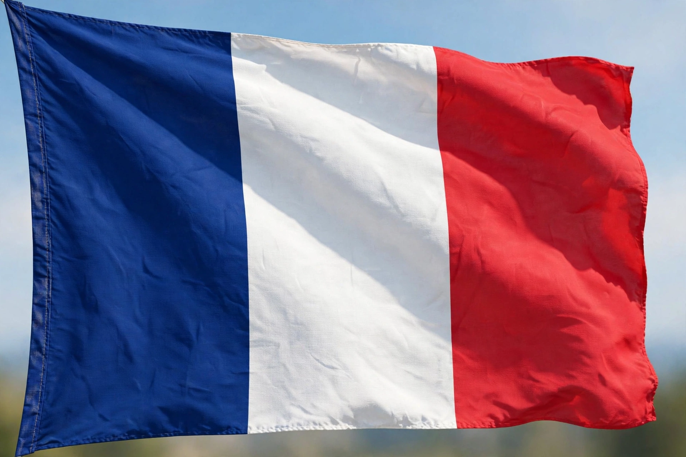

| French Republic | |
 Flag of France | |
| Capital | Paris |
|---|---|
| Official language | French |
| Government | Unitary semi-presidential republic |
| Population | approx. 68 million |
| Area | 643,801 km² (incl. overseas) |
| Currency | Euro (EUR) |
France, officially the French Republic, is a country located primarily in Western Europe, with several overseas regions and territories across the world. Its capital and largest city is Paris. Metropolitan France extends from the Mediterranean Sea to the English Channel and the North Sea, and from the Rhine to the Atlantic Ocean. France is a founding and leading member of the European Union and has the largest land area of any EU state.
The territory of modern France roughly corresponds to ancient Gaul, conquered by Julius Caesar in the 1st century BC. The Franks gave the country its name; the Kingdom of France emerged from the division of Charlemagne's empire by the Treaty of Verdun (843). Over centuries the monarchy centralised power, and France became Europe's dominant cultural and military power. The French Revolution of 1789 overthrew the old order and proclaimed the rights of man; Napoleon then spread revolutionary reforms by conquest. After periods of monarchy, empire, and republic, the Fifth Republic was founded by Charles de Gaulle in 1958, giving France its current semi-presidential system.
France is a unitary republic. The President, elected for five years, appoints the Prime Minister and government, which are accountable to the National Assembly. France is a permanent member of the UN Security Council, a nuclear power, and a member of NATO and the G7.
France has the world's seventh-largest economy (nominal) and is a leader in aerospace, luxury goods, agriculture, and tourism — it is consistently the world's most visited country. French culture has been a global centre of art, philosophy, fashion, and cuisine; French was long the language of diplomacy, and the values of the Revolution and the Enlightenment remain central to the republic's identity, including its strict secularism (laïcité).